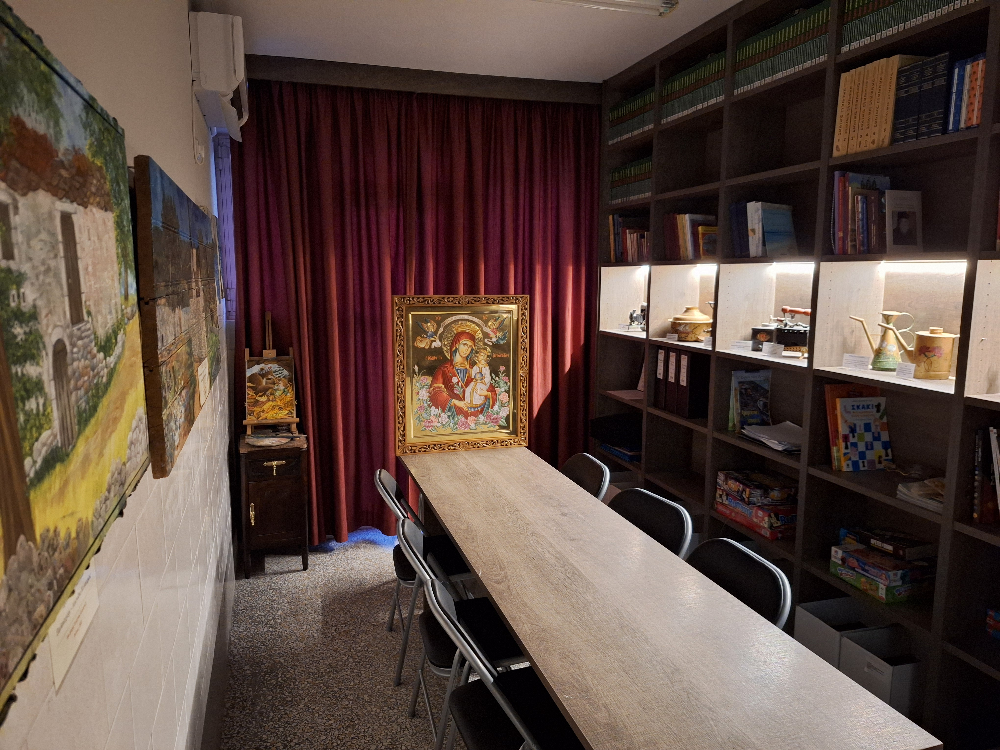
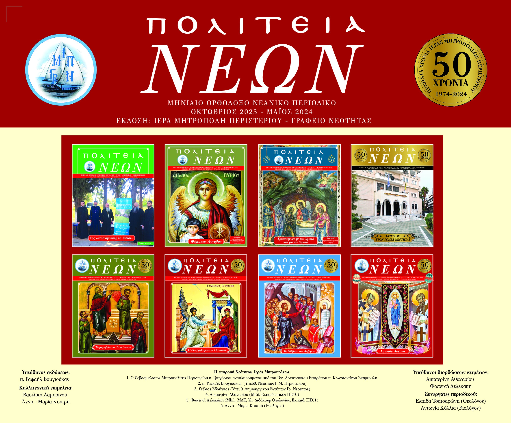

1 / 3

Γραφείο Νεότητας
2 / 3

Περιοδικά 2023
3 / 3

Περιοδικά 2023
Ἀναλαμβάνω τὴν ποιμαντικὴ εὐθύνη τῆς Μητροπόλεως τοῦ Περιστερίου σὲ μιὰ ἐποχή, κατὰ τὴν ὁποία ἡ Ἐκκλησία μας καλεῖται νὰ ἀντιμετωπίσει καινὲς προκλήσεις ποὺ προέρχονται ἀπὸ ὁλοένα ἐξελισσόμενες ἐπιστημονικὲς ἀνακαλύψεις μέσα στὸν μεταβαλλόμενο κόσμο καὶ ἀπὸ τὰ νέα δεδομένα τῆς ἐποχῆς τῆς Μετανεωτερικότητας, ποὺ προχωρᾶ ἀναπτυσσόμενη πολυμερῶς καὶ πολυτρόπως. Θὰ ἐργασθοῦμε ὅλοι μαζὶ ἑνωμένοι, χέρι μὲ χέρι, παραμένοντας καὶ ἐγὼ σὲ αὐτὸ ποὺ ἦταν προσφιλὲς στὸν Χριστό μας· νὰ εἶμαι διάκονος ὅλων σας. Ὁ ἐπίσκοπος εἶναι γιὰ νὰ διακονεῖ, ὄχι γιὰ νὰ τὸν διακονοῦν. «Οὐκ ἔρχομαι διακονηθῆναι, ἀλλὰ διακονῆσαι». Ὡς διάκονος, ἀντιλαμβάνομαι πολὺ καλὰ τί σημαίνει ὁ Ἐπίσκοπος νὰ εἶναι πατέρας καὶ ἀδελφός, καὶ ὄχι δεσπότης καὶ ἐξουσιαστής. Πιστεύω δὲ ἀκράδαντα ὅτι καμμία ἐπιτυχία στὴν διαποίμανση τοῦ λαοῦ δὲν εἶναι ἐφικτὴ χωρὶς τὸ μοναδικὸ μέσο καὶ ἐφόδιο, τὸ ὁποῖο λέγεται ἀγάπη τοῦ Ποιμένα πρὸς τὸ Ποίμνιό του. Καὶ αὐτῆς τῆς ποιμαντικῆς ἀγάπης μου στόχος εἶναι ἡ κατὰ Χριστόν αὔξηση καὶ ἡ σὲ ὅλα προκοπὴ πάντων. Ἐξ ἄλλου, «ἡγεμονίς ἐστι τῶν ἀρετῶν τὸ πάντας εὐεργετεῖν». Καὶ ὅλα αὐτὰ μὲ πιστότητα πρὸς τὴν μακροχρόνια ἱστορία καὶ τὶς παραδόσεις μας, τῶν ὁποίων θὰ εἶμαι συνεχιστὴς καὶ πιστὸς διάκονος.
Ο Σεβασμιώτατος Μητροπολίτης Περιστερίου
κ. Γρηγόριος, αναπληρούμενος υπό του Γεν. Αρχιερατικού Επιτρόπου Aρχιμ. Κωνσταντίνου Σκαρτούλη
Π. Ραφαήλ Βουγιούκας
(Διευθυντής Γρ. Νεότητος Ι. Μ. Περιστερίου)
Στέλιος Σδούγκος
(Υπευθ. Δημιουργικού Εντύπων Γρ. Νεότητος)
Αικατερίνη Αθανασίου
(MEd, Εκπαιδευτικός ΠΕ70)
Φωτεινή Λελεκάκη
(Mhil., ΜΔΕ, Υπ. Διδάκτωρ Θεολογίας, Εκπαιδ. ΠΕ01)
Άννη - Μαρία Κουτρή
(Θεολόγος)